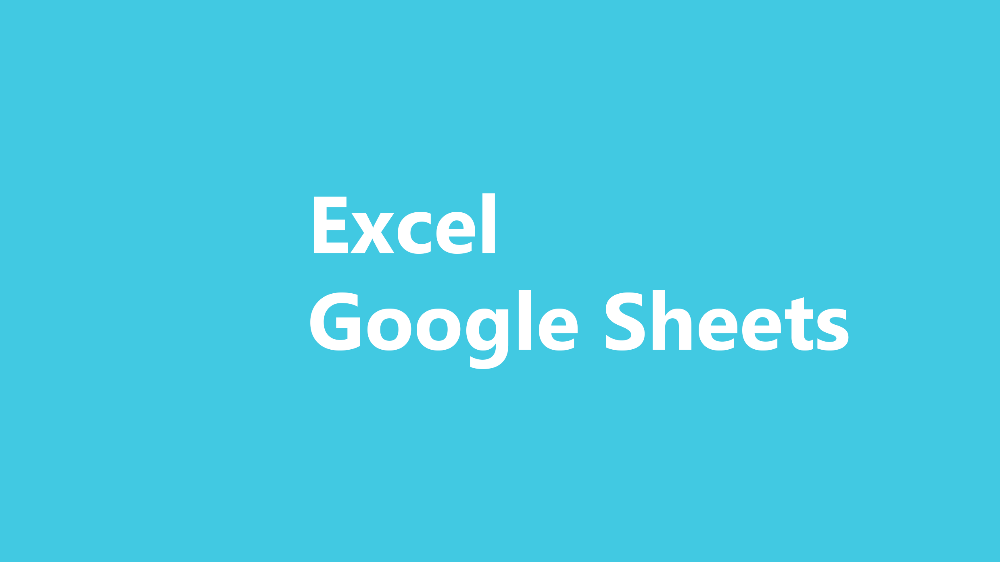

As a task manager, I will help you to have a well organized schedule, a clean and structured inbox, and all that you need to well structured your business. Here's a simple overview of how I'll do that :
Scheduling and Planning
It depends primarly on your disponibility and daily routine. I'll help you with this in order to maximize your productivity. With the help of scheduling specified software like Trello, Notion,... it will be more easily for you to do something.
Email Sorting
What's more boring in your inbox than to have it unordered and full of undesired message ? I'll help you to sort and to filter your email, labelling for priority, unsubscribe you from unwanted newsletters and keep it clean.
Data Collection
Information or data could be needed sometimes to perform task. I'm here for this to gather, compile and organizing data for you. With my expertise in Microsoft Excel and Google Sheets, information will be more compiled.
Below are some of the services that I can offer you as a task manager. But it depends with on your need. I'm open to all services and software that you recommend.